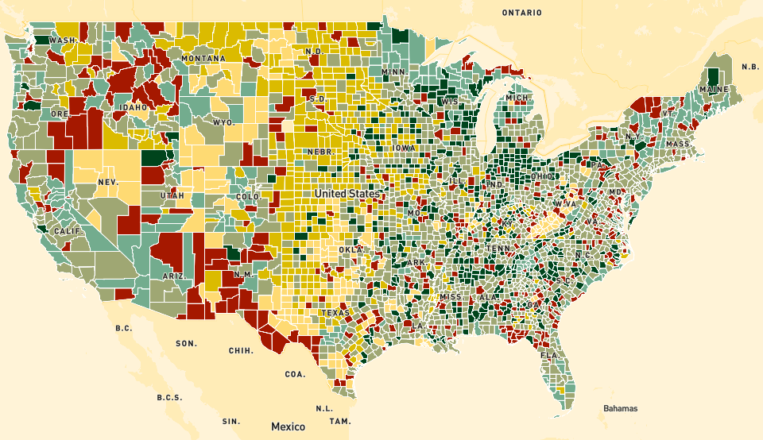

ILENA PENG
Hi! I'm Ilena, a data journalism student at Columbia University. I like to work across all sorts of beats, searching for stories driven by data and narratives. Most recently, I've been reporting on the environment, technology and mental health.
This semester, I am taking a mapping class called "Points Unknown." This page will be updated with my completed assignments.
üìç Mapmaking with Mapbox
Making two maps to practice using Mapbox: One with USDA county typologies, which show economic dependence for each county, and a second on police brutality incidents in 2020
Tools used: Mapbox GL JS